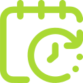

Sobre o Evento
O WASSA é um workshop anual que se destaca por sua abordagem abrangente aos desafios da análise de sentimentos. Este evento reúne especialistas renomados e jovens pesquisadores que estão na vanguarda das últimas descobertas em PLN. O workshop serve como um fórum interdisciplinar onde os participantes podem explorar técnicas avançadas, compartilhar suas pesquisas inovadoras e colaborar para impulsionar a pesquisa em análise de sentimentos.
O Workshop em Desafios em Análise de Sentimento (WASSA) organizado pela Faculdade de Computação da UFU promete ser um evento enriquecedor, repleto de conhecimentos inovadores, discussões envolventes e oportunidades de networking valiosas. Ao participar do WASSA, os interessados estarão imersos em um ambiente intelectualmente estimulante, contribuindo para o avanço contínuo da análise de sentimentos no contexto da linguagem natural.
Não perca a chance de fazer parte desta jornada emocionante no mundo da PLN. Junte-se a nós no WASSA e ajude a moldar o futuro da análise de sentimentos!
